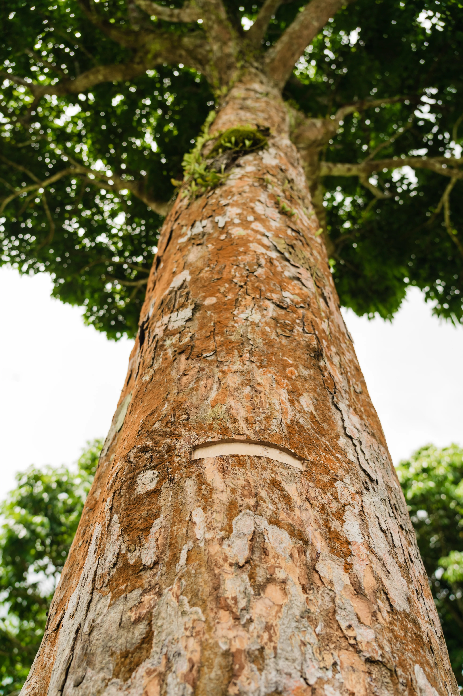
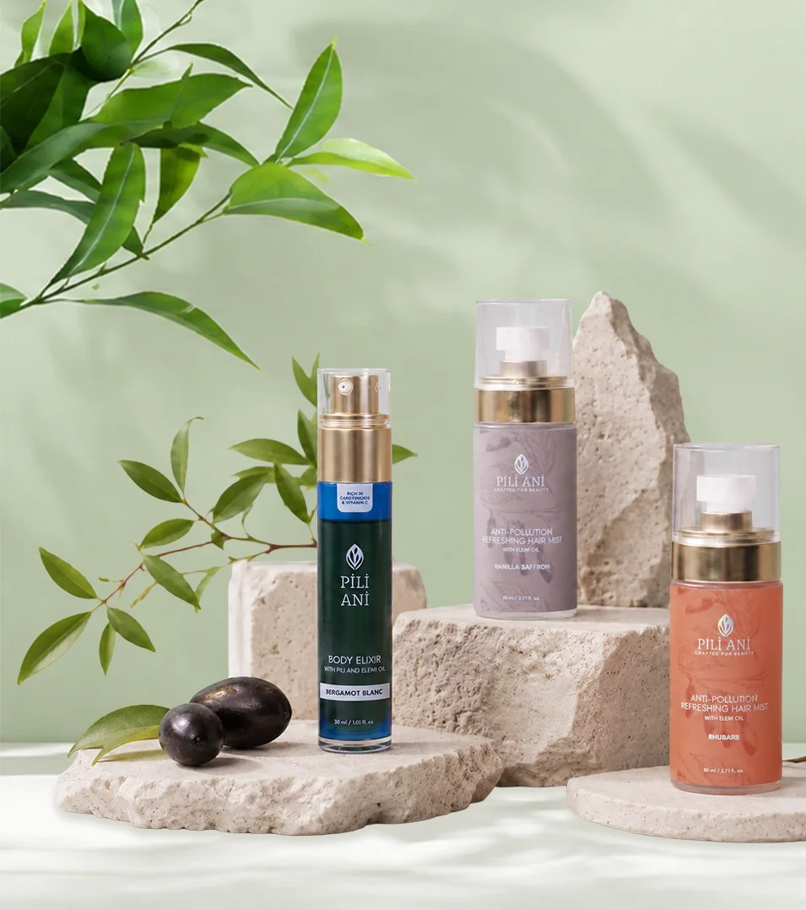

Nearly two decades ago, a longtime organic-farming advocate named Rosalina Tan moved to the Bicol region to work directly with grassroots farmers. There she met Noli, a local grower, and was introduced to a tree she hadn't paid much attention to before: pili, native to the Philippines and, at the time, mostly known regionally for its nuts. What caught her interest wasn't the fruit itself, but what came out of it, an oil with an unusually high oleic acid content, and a second, sharper compound drawn from the tree's resin, called elemi, which she learned was already prized in high-end French skincare for its firming effect. Few people in the Philippines seemed to know that a French luxury ingredient was growing wild in their own backyard.
That discovery is the entire premise of Pili Ani, the skincare brand Tan later built with her daughter, Mary Jane Ong. It launched in the Philippines in 2016 and in the United States the following year, positioned as the only skincare line in the world formulating with both pili and elemi oil in every product. But the more interesting part of the story isn't the ingredient pairing. It's what happened when Tan looked closer at how elemi was actually being harvested.
A problem hiding inside the opportunity
Elemi resin comes from tapping the tree, not harvesting its fruit, and the practice had a history of being done carelessly. Overharvesting was damaging the trees themselves, putting both the resource and the farmers who depended on it at risk. Rather than treat that as a supply-chain footnote, Tan built an agricultural education program around it, training farmers in sustainable tapping methods that protect the tree's long-term health instead of maximizing a single season's yield. It's a slower model, and a more deliberate one, built for a tree that some of these communities will still be tending decades from now.


Left: a pili tree in Bicol, tapped for elemi resin. Right: the finished formulations. Photography courtesy of Pili Ani.
That continuity matters. It's easy for a beauty brand to gesture at "giving back" with a one-line pledge; it's harder to point to the same named farmer still working the same trees, close to two decades on. Pili Ani's giving-back model is built around exactly that kind of specificity: the brand has helped over 200 families across the Bicol region, planted more than 250 pili trees of its own, and is now working with the Philippine government toward a target of 20,000 more, an explicit reforestation commitment rather than an offset bought elsewhere and mentioned once.
A local story with an international reach
What's notable about Pili Ani's trajectory is how much of it has happened without leaving its origin behind. The brand has been featured in Forbes and made a milestone debut on the U.S. Home Shopping Network, both signs of a real audience beyond the Philippines. Yet the founder still has a hands-on relationship with growers like Noli, and the farmer partnerships behind each bottle haven't been diluted along the way. That's a harder balance to strike than it sounds: plenty of "heritage" brands quietly outsource the heritage part once they scale. Pili Ani's bet is that staying rooted, instead of abstracting the story into a marketing line, is exactly what makes it travel.
For a Filipina-founded label to carry a two-ingredient, single-region story onto international shelves is its own kind of milestone. It's also a useful signal for where independent beauty is heading: toward brands that can name the farmer, the tree, and the town, and mean it.